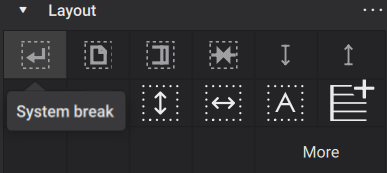
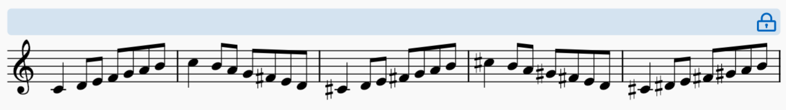
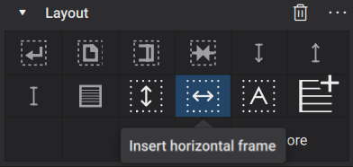

系统和水平间距
MuseScore 中的水平间距算法决定每个小节所需的最小空间量，并将它们添加到一个系统上，直到没有足够空间容纳下一个小节，此时它会开始一个新的系统。这类似于在文字处理器中排版文字。
在几乎所有情况下这都会产生可接受的结果，但在许多情况下你可能希望控制此行为，并明确指定系统换行应发生的位置，或指定系统应由特定范围的小节组成，即使它们在技术上并不能完美地"适应"。
功能
用于控制系统和水平间距的主要工具如下所述。
系统换行
系统换行使 MuseScore 在特定小节或水平框架之后结束一个系统，即使还能容纳更多小节。要添加系统换行，请选择一个小节（或其中的任何元素）或框架，然后单击排版面板中的系统换行图标：

你也可以使用键盘快捷键 Enter。这两种添加换行的方法在音符输入模式下也可以使用。
在文本项上按 Enter 会进入文本编辑模式，但在小节中任何其他类型的项上按 Enter 会在该小节上创建系统换行。
添加换行后，图标会出现在你添加换行的小节上方：

与其他排版元素一样，系统换行不会打印，其屏幕显示可以通过属性面板切换。
系统锁定
系统锁定是一种保证特定范围的小节将形成一个系统而不换行的方法。
有几种方法可以创建锁定的系统。在属性的小节部分（当选择一个小节或小节范围时可用）中，有四个新按钮，带有相应的键盘快捷键：

- 上一个（Alt+Up；macOS：Option+Up）将选中的小节移动到上一个系统，并锁定该系统
- 下一个（Alt+Down；macOS：Option+Down）将选中的小节移动到下一个系统，并锁定该系统
- 锁定选中的系统（Alt+L；macOS：Option+L）按当前状态锁定或解锁包含选中小节的系统；这是一个切换开关
- 从选区创建系统（Alt+S；macOS：Option+S）仅从选中的小节创建一个锁定的系统。
快捷键 Ctrl+Alt+L（macOS：Cmd+Option+L）将锁定乐谱中所有系统的当前排版。
锁定的系统通过其右端的挂锁符号来表示。当被选中时，会显示一条横跨锁定系统的栏，以显示其范围（这在页面视图中可能显得多余，但在连续视图中更有用）：

重要的是要理解，锁定系统的开始和结束都是固定的，这意味着实际上上一个系统的结束也是固定的（即使该系统本身没有被锁定，或者那里没有明确的系统换行）。
系统锁定有一些注意事项。此功能将允许你任意将尽可能多的小节强制到一个系统上，即使结果在图形上是灾难性的；MuseScore 能够比平时将更多内容压缩到一个系统上，并且会优雅地压缩间距，但只能到一定程度。此外，锁定系统——根据其定义——永远不会重新流动，所以最好只在关于页面和谱表大小的基本排版决定已经做出之后再开始添加锁定。如果你想要一种能适应不同页面大小的响应式排版，最好避免使用它们。
系统锁定在排版乐器分谱时特别方便。一旦你确定了分谱中翻页的好位置并添加了分页符，就可以快速轻松地使用上一个和下一个按钮（或相应的快捷键）在系统之间移动小节，以根据需要均匀分布间距，在此过程中系统会逐渐被锁定。
当所做的更改导致乐谱排版发生重大变化，可能与锁定相矛盾或产生无意义的结果时，系统锁定将被移除。特别是，当锁定的系统包含多小节休止符，并且某个操作导致该休止符取消分组时会发生这种情况：这包括关闭多小节休止符，或显示新的乐器或谱表。在锁定系统内创建系统或分页符也会移除系统锁定。
由于这些原因，在乐谱制作的后期阶段再使用系统锁定来固定排版通常是明智的。
在 MuseScore Studio 提供系统锁定功能之前，可以通过将将小节保持在同一系统上排版项（在排版面板中可用）应用于范围内的所有小节来实现类似的结果。此项目不应再用于此目的，而应改用系统锁定。该项目仍然有一个有限的有效用途，即简单地指定系统换行不应发生在某个位置（这就像文字处理器中的"不间断空格"）。这对于 2 小节和 4 小节反复记号很有用，例如，这些项目会自动添加。
排版拉伸
你可以增加或减小小节的宽度，其内容会相应地拉伸。小节的计算宽度乘以一个排版拉伸因子，你可以为选中的小节设置数值，但你也可以使用命令直接增加或减小选中小节的拉伸，而无需设置特定数字。
要直接更改排版拉伸，你可以选择一个或多个小节，然后使用 格式→拉伸 中的命令之一：
- 增加排版拉伸：增加小节的宽度（快捷键：}）
- 减小排版拉伸：减小小节的宽度（快捷键：{）
- 重置排版拉伸：重置小节的宽度。
要以数值方式设置排版拉伸值，你可以选择一个或多个小节，然后在属性面板的外观部分设置小节宽度：

每次按 } 或 { 会将此值增加或减少 0.1。
你也可以通过右键单击单个小节、选择小节属性并在结果对话框中设置排版拉伸来设置此值。
如果你需要压缩小节的宽度以便将更多内容放入系统（超过默认值），最好改用系统锁定功能。
水平框架
水平框架是用于容纳空白空间、文本或图像的容器，可以放置在乐谱中的小节之间。虽然你可以在水平框架内放置文本或图像（请参阅使用框架添加额外内容），但它们的用途之一是在系统内创建空白空间，如下所示。
要向乐谱添加水平框架，请选择一个小节，然后单击排版面板中的插入水平框架图标：

框架将被插入到所选小节的前面。如果该小节位于系统的开头，如果有空间，框架实际上可能出现在上一个系统的末尾。
你也可以使用 添加→框架 菜单中的命令。
然后，你可以使用属性面板中的宽度设置更改框架的宽度，或通过选择框架并拖动其手柄，或使用 Left 和 Right 光标键来更改宽度。键盘调整以 0.5 sp 的步长进行，如果按住 Ctrl（Mac：Cmd）则为 1.0 sp。
- 插入水平框架：在所选小节之前插入水平框架
- 追加水平框架：在乐谱末尾追加水平框架
任务
在小节之间创建空间
要在两个小节之间创建空间，请选择第二个小节，然后如上所述插入并调整水平框架。
在系统开头或末尾创建空间
要在单个系统的开头或末尾创建额外空间，请添加水平框架。对于乐谱的第一个系统，第一系统缩进样式设置（在 格式→样式→乐谱 中）会自动创建空间。有关更多信息，请参阅乐谱大小和间距。当你考虑在单个系统末尾添加额外空间时，你可能希望改用"章节分隔"创建单独的部分，请参阅使用章节进行多乐章或多首歌曲章节。
要在系统开头添加空间，请选择系统的第一个小节，然后如上所述插入并调整水平框架。你可能还需要在上一系统的最后一个小节上放置一个系统换行，以确保水平框架不会出现在那里。
要在系统末尾添加空间，请首先确保最后一个小节上没有系统换行，然后选择下一个小节并插入水平框架。然后，如有必要，向水平框架本身添加系统换行。
调整最后系统的宽度
如果乐谱最后系统的默认宽度超过 格式→样式→间距 中设置的最后系统填充阈值，它通常会被右对齐（拉伸以填满页面宽度）。有关更多信息，请参阅乐谱大小和间距。这通常会产生良好的结果，但在某些情况下，最后系统被填满但如果不填满会更好看，反之亦然。
对于系统被填满但你希望它不被填满的情况，你可以增加阈值。值为 100% 意味着最后系统永远不会被填满（因为其宽度永远不会超过该阈值）。相反，如果最后系统没有被填满但你希望它被填满，则减小阈值。值为 0% 意味着最后系统将始终拉伸（因为其宽度将始终超过该阈值）。
然而，通常你应该选择一个能适应乐谱未来变化（可能导致最后系统上小节增多或减少）的阈值。例如，如果你当前的最后系统有几个小节，而你通过将阈值设置为 0% 强制它被填满，如果未来排版变化导致最后系统只有一个小节，这可能会很难看。或者，如果最后系统只有一个小节，而你通过将阈值设置为 100% 强制它不被填满，如果未来排版变化导致最后系统有几个小节，这也可能会很难看。这就是为什么一个更折中的值通常更有意义。
然而，通常更好的做法是规划系统换行，以避免最后系统比其他系统更空。